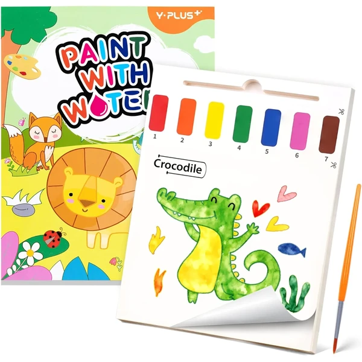

👶 2 años
Libro de acuarelas con animales YPLUS
Un libro con veinte páginas de papel grueso para pintar con acuarela sin que el agua traspase, con números que guían la combinación de colores e ilustraciones de animales. Incluye su propio pincel.
⭐
¿Por qué nos gusta?
- ✔Veinte páginas con patrones distintos.
- ✔Papel grueso que evita que el agua traspase.
- ✔Incluye pincel de buena calidad.
💬
Lo que más destacan las familias
Lo que más suele gustar es lo limpio que resulta pintar sin miedo a que el agua traspase al papel, algo que se agradece especialmente en casa. También se valora el pincel incluido, de mejor calidad de lo que suele esperarse en este tipo de sets.